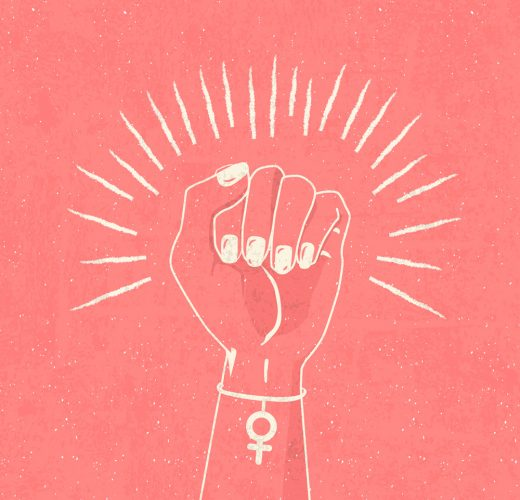
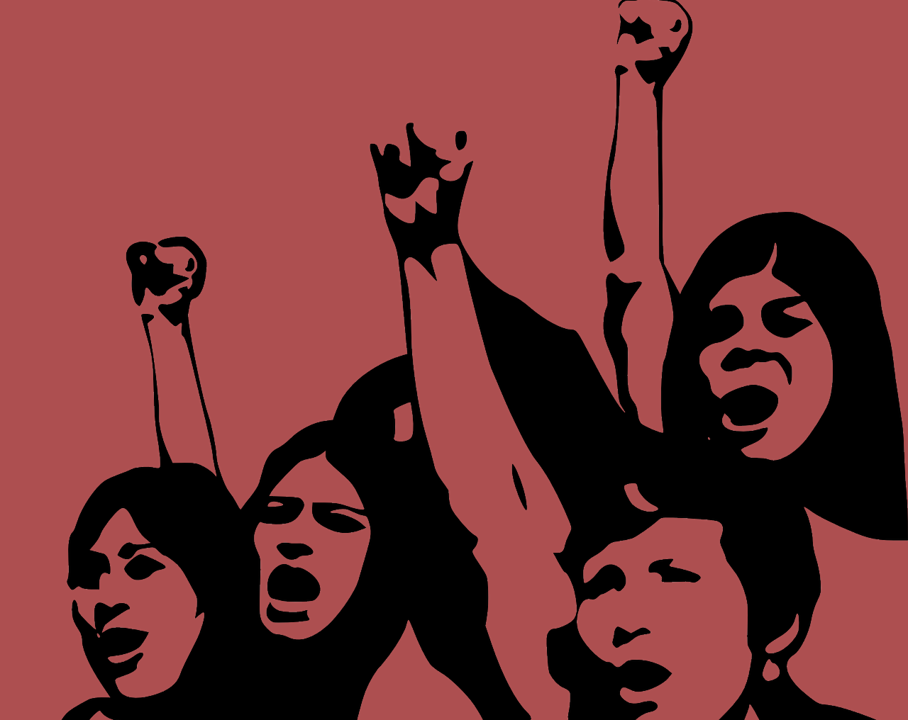
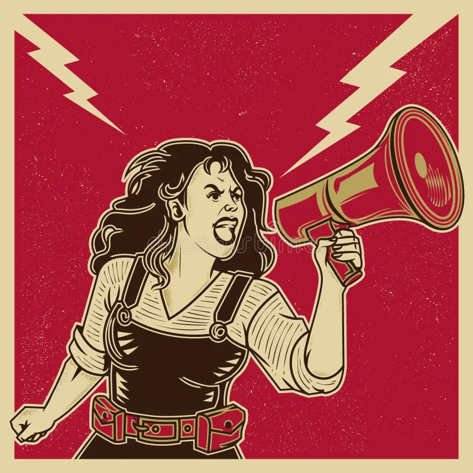

Feminizam je naziv za grupu ideologija i političkih pokreta kojima je cilj poboljšanje
položaja žene u društvu, odnosno izjednačavanje prava žena s pravima muškaraca.
Ovaj pokret smatra da društva daju prioritet muškoj tački gledišta i da se žene u tim društvima tretiraju nepravedno.
Napori da se ovo promijeni uključuju borbu protiv rodnih stereotipa i poboljšanje obrazovnih,
profesionalnih i međuljudskih mogućnosti i ishoda za žene, zalaže se za prava žena, uklanjanje diskriminacije na osnovu pola i stvaranje društva u kojem žene imaju ista prava i slobodu kao i muškarci. Ne ograničava se na jednu vrstu žene ili jednu vrstu problema.
Umjesto toga, to je raznolik pokret koji se bavi mnogim aspektima društva, uključujući ekonomiju, politiku,
reproduktivno zdravlje, nasilje nad ženama, stereotipe i mnoge druge teme.
Feminizam prepoznaje različite slojeve
identiteta, poput rase, klase, etničke pripadnosti, kako bi stvorio inkluzivnu platformu za sve žene.
Feminizam se suočava s patrijarhalnim normama i vrijednostima koje doprinose nejednakosti polova.
To uključuje preispitivanje i kritiku tradicionalnih rodnih uloga i stereotipa koji ograničavaju žene u njihovom
ličnom i profesionalnom životu.
Feminizam naglašava potrebu za izgradnjom društva u kojem su žene autonomne i imaju
pravo donositi vlastite odluke.
Aktivizam i promjena ključni su elementi feminizma. Ovo nije samo teorijski pokret, već i aktivni angažman u društvu
kako bi se postigla ravnopravnost.
Feminizam podstiče zajednički naporm
kako bi se stvorila pravednija i inkluzivnija zajednica za sve.


